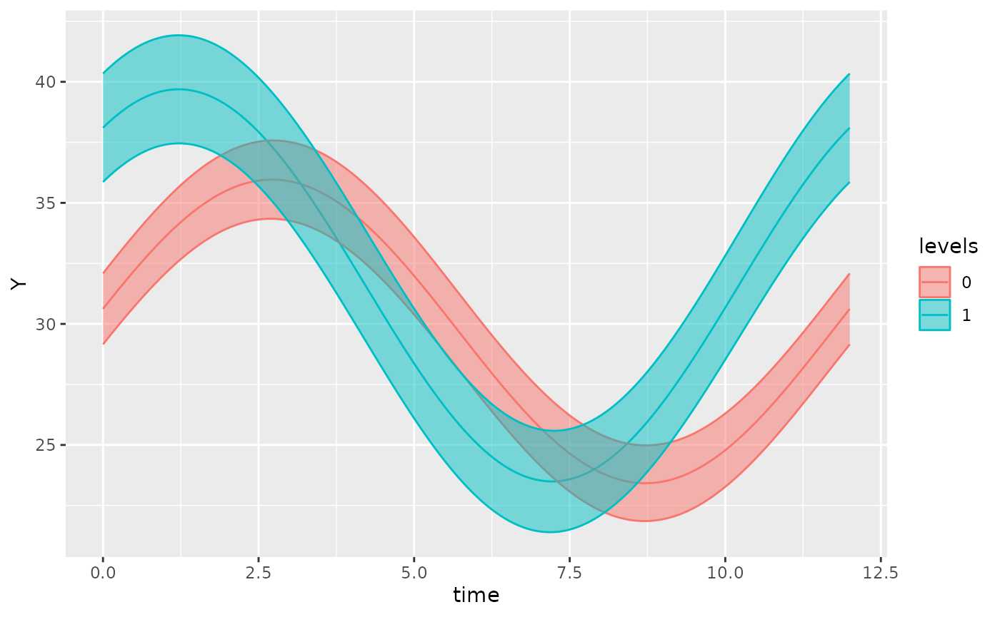
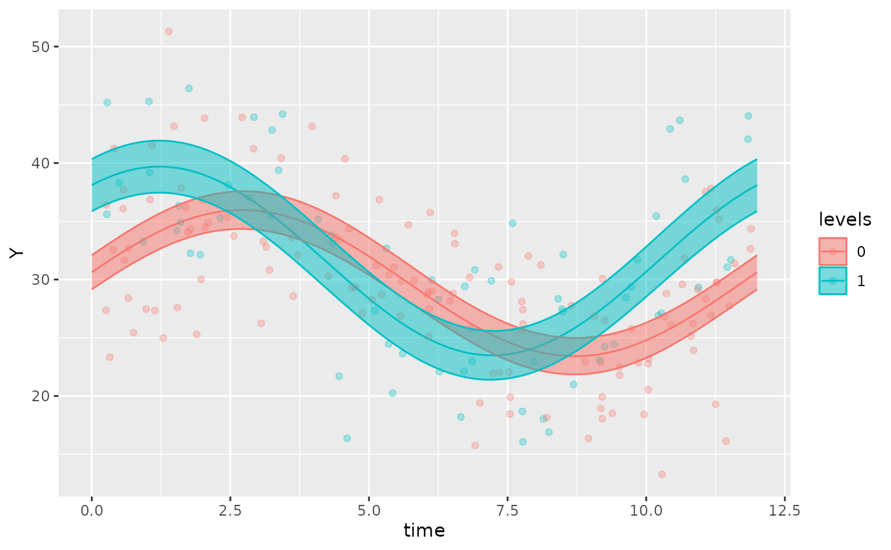
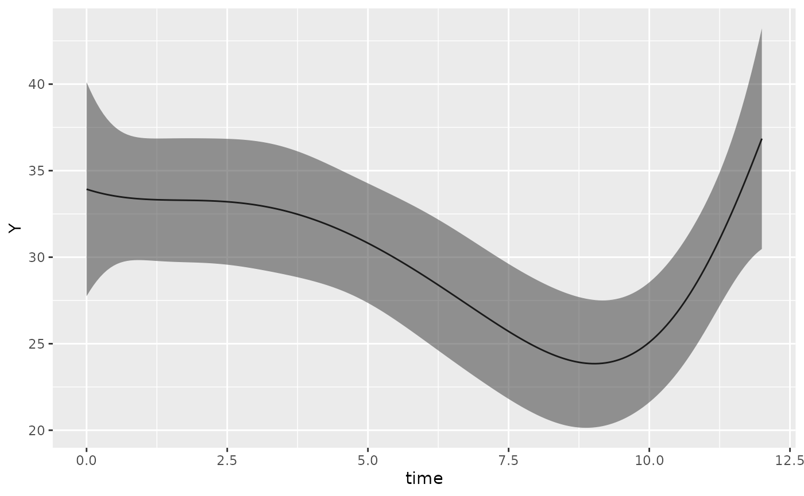
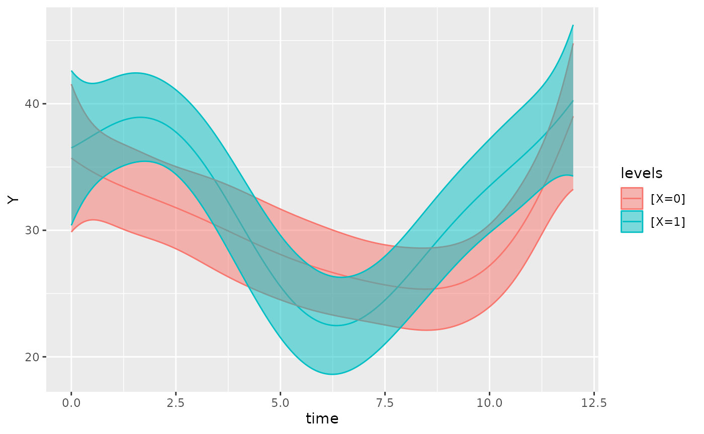
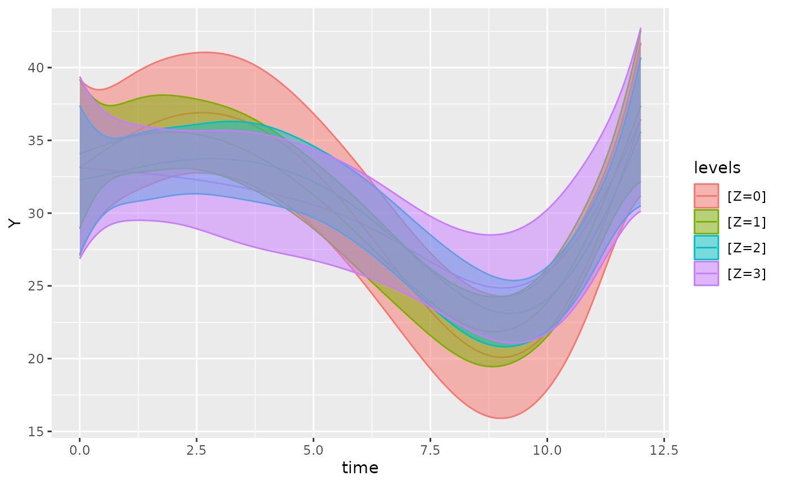

Introduction to GLMMcosinor
Source:vignettes/introduction-to-GLMMcosinor.Rmd
introduction-to-GLMMcosinor.RmdIntroduction
The GLMMcosinor package generates generalised linear models based on circadian data, and allows users to summarise, predict, and plot based on this modelling. Existing packages have focussed primarily on Gaussian data. Some circadian regression modelling packages haveallowed users to specify generalised linear models, but with limited flexibility. GLMMcosinor takes a comprehensive approach to modelling by utilising the glmmTMB package, which allows users to model circadian data from the following distributions: - binomial - guassian - Gamma - inverse.gaussian - poisson - quasi - quasibinomial - quasipoisson
Using: ‘cosinor.glmm.R’
cosinor.glmm() generates a regression model with parameter estimates based on a data set and formula specified by the user.
The formula argument for cosinor.glmm() is constructed in two parts:
Firstly: specification of any intercept or covariate mesor terms. By default, an intercept term is included but this can be removed by including a 0 in the formula. For example, the following formula has an intercept and X listed as a covariate mesor term:
data(vitamind)
cosinor.glmm(Y ~ X + amp.acro(time, group = "X"), data = vitamind)
#>
#> Conditional Model
#>
#> Raw formula:
#> Y ~ X + X:main_rrr1 + X:main_sss1
#> <environment: 0x557f2d486090>
#>
#> Raw Coefficients:
#> (Intercept) X1 X0:main_rrr1 X1:main_rrr1 X0:main_sss1 X1:main_sss1
#> 29.6897959 1.9018623 0.9307876 6.5102900 6.2009896 4.8184618
#>
#> Transformed Coefficients:
#> (Intercept) [X=1] [X=0]:amp [X=1]:amp [X=0]:acr [X=1]:acr
#> 29.6897959 1.9018623 6.2704576 8.0994722 -1.4218056 -0.6371544Alternatively, the following example will have no intercept term, but will still generate a mesor estimate for the X group. In the output, the [X=0] and [X=1] refer to mesors for the levels 0 and 1 respectively within the group “X”.
cosinor.glmm(Y ~ 0 + X + amp.acro(time, group = "X"), data = vitamind)
#>
#> Conditional Model
#>
#> Raw formula:
#> Y ~ X + X:main_rrr1 + X:main_sss1 - 1
#> <environment: 0x557f36101528>
#>
#> Raw Coefficients:
#> X0 X1 X0:main_rrr1 X1:main_rrr1 X0:main_sss1 X1:main_sss1
#> 29.6898025 31.5916474 0.9307898 6.5102899 6.2010128 4.8184694
#>
#> Transformed Coefficients:
#> [X=0] [X=1] [X=0]:amp [X=1]:amp [X=0]:acr [X=1]:acr
#> 29.6898025 31.5916474 6.2704808 8.0994766 -1.4218058 -0.6371552Finally, the following will have no intercept term, nor will it generate any mesor estimates:
cosinor.glmm(Y ~ 0 + amp.acro(time, group = "X"), data = vitamind)
#>
#> Conditional Model
#>
#> Raw formula:
#> Y ~ X:main_rrr1 + X:main_sss1 - 1
#> <environment: 0x557f35e6c248>
#>
#> Raw Coefficients:
#> X0:main_rrr1 X1:main_rrr1 X0:main_sss1 X1:main_sss1
#> 3.986821 5.660530 4.179435 1.035821
#>
#> Transformed Coefficients:
#> [X=0]:amp [X=1]:amp [X=0]:acr [X=1]:acr
#> 5.7760208 5.7545223 -0.8089803 -0.1809876Secondly, specification of the amp.acro() function. As will be described later, the amp.acro() function modifies the original dataset so that the amplitude and acrophase can be calculated. Importantly, the amp.acro() argument is where users specify:
‘group’ (the name of the group covariates). Ensure that the names in this argument are actually found in the dataset
‘time’ (the name of the time column). Again, ensure that the name matches the name of the time values in the dataset. Also, ensure that this argument is NOT a string.
‘n_components’ (The number of components). If the user wishes to have a more than one trigonometric component in the model, they can specify the number of such components here. Note that this value will need to match the length of the group argument and the period argument. For example, if n_components = 3, then the group argument should have 3 characters, where the position of each character corresponds to the component that the group covariate describes:
data(vitamind)
vitamind$Z <- rbinom(length(vitamind$X), 1, prob = 0.5)
cosinor.glmm(Y ~ X + amp.acro(time, n_components = 3, group = c("X", NA, "Z"), period = c(12, 10, 8)), data = vitamind)
#>
#> Conditional Model
#>
#> Raw formula:
#> Y ~ X + main_rrr2 + main_sss2 + X:main_rrr1 + X:main_sss1 + Z:main_rrr3 +
#> Z:main_sss3
#> <environment: 0x557f35cf31a8>
#>
#> Raw Coefficients:
#> (Intercept) X1 main_rrr2 main_sss2 X0:main_rrr1 X1:main_rrr1
#> 31.2046553 1.9587672 -18.1228660 -1.6018782 14.0502232 19.4770355
#> X0:main_sss1 X1:main_sss1 Z0:main_rrr3 Z1:main_rrr3 Z0:main_sss3 Z1:main_sss3
#> 0.1780531 -1.1321055 3.8899838 3.7064044 3.1349392 4.7866297
#>
#> Transformed Coefficients:
#> (Intercept) [X=1] [X=0]:amp1 [X=1]:amp1 amp2 [Z=0]:amp3
#> 31.20465529 1.95876720 14.05135138 19.50990964 18.19352323 4.99598017
#> [Z=1]:amp3 [X=0]:acr1 [X=1]:acr1 acr2 [Z=0]:acr3 [Z=1]:acr3
#> 6.05386302 -0.01267194 0.05805982 3.05343188 -0.67832836 -0.91190846As demonstrated in the example above, the ‘NA’ entry in the group argument indicates a component with no group covariate assigned.
If only one group argument and and/or one period argument is supplied, but there is more than one component specified, then it will be assumed that the one group and one period specified applies to all components:
For instance, the following two cosinor.glmm() calls produce the same output:
cosinor.glmm(Y ~ X + amp.acro(time, n_components = 3, group = "X", period = c(12)), data = vitamind)
#>
#> Conditional Model
#>
#> Raw formula:
#> Y ~ X + X:main_rrr1 + X:main_sss1 + X:main_rrr2 + X:main_sss2 +
#> X:main_rrr3 + X:main_sss3
#> <environment: 0x557f35dcedf0>
#>
#> Raw Coefficients:
#> (Intercept) X1 X0:main_rrr1 X1:main_rrr1 X0:main_sss1 X1:main_sss1
#> 29.6897928 1.9018634 0.3102624 2.1700957 2.0669982 1.6061535
#> X0:main_rrr2 X1:main_rrr2 X0:main_sss2 X1:main_sss2 X0:main_rrr3 X1:main_rrr3
#> 0.3102624 2.1700957 2.0669982 1.6061535 0.3102624 2.1700957
#> X0:main_sss3 X1:main_sss3
#> 2.0669982 1.6061535
#>
#> Transformed Coefficients:
#> (Intercept) [X=1] [X=0]:amp1 [X=1]:amp1 [X=0]:amp2 [X=1]:amp2
#> 29.6897928 1.9018634 2.0901541 2.6998230 2.0901541 2.6998230
#> [X=0]:amp3 [X=1]:amp3 [X=0]:acr1 [X=1]:acr1 [X=0]:acr2 [X=1]:acr2
#> 2.0901541 2.6998230 -1.4218057 -0.6371545 -1.4218057 -0.6371545
#> [X=0]:acr3 [X=1]:acr3
#> -1.4218057 -0.6371545
cosinor.glmm(Y ~ X + amp.acro(time, n_components = 3, group = c("X", "X", "X"), period = c(12, 12, 12)), data = vitamind)
#>
#> Conditional Model
#>
#> Raw formula:
#> Y ~ X + X:main_rrr1 + X:main_sss1 + X:main_rrr2 + X:main_sss2 +
#> X:main_rrr3 + X:main_sss3
#> <environment: 0x557f35dbbea0>
#>
#> Raw Coefficients:
#> (Intercept) X1 X0:main_rrr1 X1:main_rrr1 X0:main_sss1 X1:main_sss1
#> 29.6897928 1.9018634 0.3102624 2.1700957 2.0669982 1.6061535
#> X0:main_rrr2 X1:main_rrr2 X0:main_sss2 X1:main_sss2 X0:main_rrr3 X1:main_rrr3
#> 0.3102624 2.1700957 2.0669982 1.6061535 0.3102624 2.1700957
#> X0:main_sss3 X1:main_sss3
#> 2.0669982 1.6061535
#>
#> Transformed Coefficients:
#> (Intercept) [X=1] [X=0]:amp1 [X=1]:amp1 [X=0]:amp2 [X=1]:amp2
#> 29.6897928 1.9018634 2.0901541 2.6998230 2.0901541 2.6998230
#> [X=0]:amp3 [X=1]:amp3 [X=0]:acr1 [X=1]:acr1 [X=0]:acr2 [X=1]:acr2
#> 2.0901541 2.6998230 -1.4218057 -0.6371545 -1.4218057 -0.6371545
#> [X=0]:acr3 [X=1]:acr3
#> -1.4218057 -0.6371545Dispersion and zero-inflation model specification
The cosinor.glmm() function optionally allows users to specify formulas for dispersion and zero-inflation models. These formulas are independent of the main formula specification:
data(vitamind) # load vitamind dataset
vitamind$Z <- rbinom(length(vitamind$X), 2, prob = 0.5) # modify dataset
cosinor.glmm(Y ~ X + amp.acro(time, n_components = 3, group = c("X", NA, "Z"), period = c(12, 10, 8)),
data = vitamind,
dispformula = ~ X + amp.acro(time, n_components = 3, group = c("Z", NA, "X"), period = c(12, 11, 8)),
ziformula = ~ X + amp.acro(time, n_components = 2, group = c("Z", "X"), period = c(12, 8))
)
#>
#> Conditional Model
#>
#> Raw formula:
#> Y ~ X + main_rrr2 + main_sss2 + X:main_rrr1 + X:main_sss1 + Z:main_rrr3 +
#> Z:main_sss3
#> <environment: 0x557f357ab0c0>
#>
#> Raw Coefficients:
#> (Intercept) X1 main_rrr2 main_sss2 X0:main_rrr1 X1:main_rrr1
#> 29.72596264 2.10881888 -4.49418080 7.66221299 1.08725673 7.32504464
#> X0:main_sss1 X1:main_sss1 Z0:main_rrr3 Z1:main_rrr3 Z2:main_rrr3 Z0:main_sss3
#> 0.27057171 -0.07884009 5.10582385 2.38149289 4.53719480 -2.55685579
#> Z1:main_sss3 Z2:main_sss3
#> -0.68271431 -2.80931396
#>
#> Transformed Coefficients:
#> (Intercept) [X=1] [X=0]:amp1 [X=1]:amp1 amp2 [Z=0]:amp3
#> 29.72596264 2.10881888 1.12041789 7.32546890 8.88297073 5.71024944
#> [Z=1]:amp3 [Z=2]:amp3 [X=0]:acr1 [X=1]:acr1 acr2 [Z=0]:acr3
#> 2.47741947 5.33651400 -0.24390284 0.01076267 -2.10125865 0.46426536
#> [Z=1]:acr3 [Z=2]:acr3
#> 0.27918758 0.55439900
#>
#> ***********************
#>
#> Dispersion Model
#>
#> Raw Formula:
#> ~X + disp_rrr2 + disp_sss2 + Z:disp_rrr1 + Z:disp_sss1 + X:disp_rrr3 +
#> X:disp_sss3
#> <environment: 0x557f35705d80>
#>
#> Raw Coefficients:
#> (Intercept) X1 disp_rrr2 disp_sss2 Z0:disp_rrr1 Z1:disp_rrr1
#> 2.2402813 0.4900398 12.6130103 9.5693549 -13.4671129 -13.3123776
#> Z2:disp_rrr1 Z0:disp_sss1 Z1:disp_sss1 Z2:disp_sss1 X0:disp_rrr3 X1:disp_rrr3
#> -13.0750749 -4.4071878 -4.2949518 -5.1591819 1.4096682 1.0624769
#> X0:disp_sss3 X1:disp_sss3
#> -2.1118694 -2.4780366
#>
#> Transformed Coefficients:
#> (Intercept) [X=1] [Z=0]:amp1 [Z=1]:amp1 [Z=2]:amp1 amp2
#> 2.2402813 0.4900398 14.1699130 13.9880667 14.0561283 15.8322639
#> [X=0]:amp3 [X=1]:amp3 [Z=0]:acr1 [Z=1]:acr1 [Z=2]:acr1 acr2
#> 2.5391252 2.6962052 2.8253220 2.8295072 2.7657662 -0.6490391
#> [X=0]:acr3 [X=1]:acr3
#> 0.9822185 1.1657473
#>
#> ***********************
#>
#> Zero-Inflation Model
#>
#> Raw Formula:
#> ~X + Z:zi_rrr1 + Z:zi_sss1 + X:zi_rrr2 + X:zi_sss2
#> <environment: 0x557f3560e370>
#>
#> Raw Coefficients:
#> (Intercept) X1 Z0:zi_rrr1 Z1:zi_rrr1 Z2:zi_rrr1
#> -14.404359890 -1.119695328 0.204129260 0.313785896 0.335795586
#> Z0:zi_sss1 Z1:zi_sss1 Z2:zi_sss1 X0:zi_rrr2 X1:zi_rrr2
#> 0.063838782 -0.106180270 0.309664177 0.024438905 -0.008173166
#> X0:zi_sss2 X1:zi_sss2
#> -0.531714517 -0.266292609
#>
#> Transformed Coefficients:
#> (Intercept) [X=1] [Z=0]:amp1 [Z=1]:amp1 [Z=2]:amp1 [X=0]:amp2
#> -14.4043599 -1.1196953 0.2138788 0.3312640 0.4567829 0.5322759
#> [X=1]:amp2 [Z=0]:acr1 [Z=1]:acr1 [Z=2]:acr1 [X=0]:acr2 [X=1]:acr2
#> 0.2664180 -0.3031008 0.3262897 -0.7449353 1.5248662 1.6014791This example shows how dispformula and ziformula can be specified with a different number of components, with different periods, and with different group-component assignments. By default, dispformula = ~1, and ziformula = ~0
Mention: - how to specify the input (specifically, amp.acro) - how to specify multi-component models - how to specify dispersion and zero-inflation models - how to specify random effects - how to interpret the output
Using: ‘summary.cosinor.glmm.R’
The summary.cosinor.glmm() function provides summary statistics for an object produced by the cosinor.glmm() function. It outputs the estimates, confidence intervals, and tests for both the raw parameters and the transformed (mesor, amplitude, and acrophase) parameters. Currently, the summary statistics do not represent a comparison between any groups - that is the role of the test_cosinor() function.
Here is an example of how to use the summary.cosinor.glmm() function:
data(vitamind)
object <- cosinor.glmm(Y ~ X + amp.acro(time, group = "X"), data = vitamind)
summary(object)
#>
#> Conditional Model
#> Raw model coefficients:
#> estimate standard.error lower.CI upper.CI p.value
#> (Intercept) 29.6897959 0.4583696 28.7914079 30.588184 0.0000000
#> X1 1.9018623 0.7919688 0.3496320 3.454093 0.0163309
#> X0:main_rrr1 0.9307876 0.6260656 -0.2962784 2.157853 0.1370874
#> X1:main_rrr1 6.5102900 0.9303406 4.6868560 8.333724 0.0000000
#> X0:main_sss1 6.2009896 0.6701952 4.8874311 7.514548 0.0000000
#> X1:main_sss1 4.8184618 0.8963299 3.0616875 6.575236 0.0000001
#>
#> Transformed coefficients:
#> estimate standard.error lower.CI upper.CI p.value
#> (Intercept) 29.6897959 0.4583696 28.7914079 30.5881839 0.0000000
#> [X=1] 1.9018623 0.7919688 0.3496320 3.4540926 0.0163309
#> [X=0]:amp1 6.2704576 0.6696564 4.9579551 7.5829600 0.0000000
#> [X=1]:amp1 8.0994722 1.1028357 5.9379540 10.2609904 0.0000000
#> [X=0]:acr1 -1.4218056 0.0999356 -1.6176757 -1.2259354 0.0000000
#> [X=1]:acr1 -0.6371544 0.1404362 -0.9124044 -0.3619044 0.0000057The summary statistics for dispersion and zero-inflation models will also be provided by the summary.cosinor.glmm() function, if the original cosinor.glmm object being analysed contains them:
data(vitamind) # load vitamind dataset
vitamind$Z <- rbinom(length(vitamind$X), 2, prob = 0.5) # modify dataset
object <- cosinor.glmm(Y ~ X + amp.acro(time, n_components = 3, group = c("X", NA, "Z"), period = c(12, 10, 8)),
data = vitamind,
dispformula = ~ X + amp.acro(time, n_components = 3, group = c("Z", NA, "X"), period = c(12, 11, 8)),
ziformula = ~ X + amp.acro(time, n_components = 2, group = c("Z", "X"), period = c(12, 8))
)
summary(object)
#>
#> Conditional Model
#> Raw model coefficients:
#> estimate standard.error lower.CI upper.CI p.value
#> (Intercept) 31.3159976 3.072165 25.2946651 37.337330 0.0000000
#> X1 2.2495828 0.843482 0.5963885 3.902777 0.0076527
#> main_rrr2 -17.0083709 28.450193 -72.7697247 38.752983 0.5499536
#> main_sss2 -1.3689642 22.444193 -45.3587742 42.620846 0.9513639
#> X0:main_rrr1 13.0733453 26.843981 -39.5398911 65.686582 0.6262497
#> X1:main_rrr1 18.7973898 26.792483 -33.7149120 71.309692 0.4829337
#> X0:main_sss1 0.3749658 6.250952 -11.8766753 12.626607 0.9521673
#> X1:main_sss1 -0.9690672 6.382642 -13.4788149 11.540681 0.8793222
#> Z0:main_rrr3 2.1449968 4.736028 -7.1374468 11.427440 0.6506132
#> Z1:main_rrr3 3.4712110 4.494116 -5.3370949 12.279517 0.4398834
#> Z2:main_rrr3 4.0030662 4.417898 -4.6558542 12.661987 0.3648818
#> Z0:main_sss3 3.4449112 11.602491 -19.2955536 26.185376 0.7665342
#> Z1:main_sss3 2.9540869 11.507813 -19.6008126 25.508986 0.7974083
#> Z2:main_sss3 5.1074275 11.606034 -17.6399818 27.854837 0.6598889
#>
#> Transformed coefficients:
#> estimate standard.error lower.CI upper.CI p.value
#> (Intercept) 31.3159976 3.072165 25.2946651 37.337330 0.0000000
#> [X=1] 2.2495828 0.843482 0.5963885 3.902777 0.0076527
#> amp2 17.0633743 29.884399 -41.5089707 75.635719 0.5680136
#> [X=0]:amp1 13.0787215 6.054119 1.2128667 24.944576 0.0307493
#> [X=1]:amp1 18.8223526 5.888996 7.2801323 30.364573 0.0013926
#> [Z=0]:amp3 4.0581306 23.897876 -42.7808456 50.897107 0.8651585
#> [Z=1]:amp3 4.5580626 27.901658 -50.1281828 59.244308 0.8702336
#> [Z=2]:amp3 6.4892491 25.331939 -43.1604396 56.138938 0.7978206
#> acr2 3.0612781 1.201158 0.7070521 5.415504 0.0108154
#> [X=0]:acr1 -0.0286738 1.582066 -3.1294660 3.072118 0.9855397
#> [X=1]:acr1 0.0515077 1.099274 -2.1030287 2.206044 0.9626279
#> [Z=0]:acr3 -1.0138839 4.923195 -10.6631687 8.635401 0.8368376
#> [Z=1]:acr3 -0.7050888 2.880642 -6.3510436 4.940866 0.8066361
#> [Z=2]:acr3 -0.9060282 2.695905 -6.1899040 4.377848 0.7368137
#>
#> ***********************
#>
#> Dispersion Model
#> Raw model coefficients:
#> estimate standard.error lower.CI upper.CI p.value
#> (Intercept) 2.2915878 1.2883282 -0.2334891 4.8166647 0.0752841
#> X1 0.3441597 0.2436795 -0.1334435 0.8217628 0.1578483
#> disp_rrr2 13.1388687 22.7748638 -31.4990440 57.7767814 0.5640055
#> disp_sss2 10.8470851 7.1293019 -3.1260898 24.8202600 0.1281396
#> Z0:disp_rrr1 -14.6385235 21.6415519 -57.0551857 27.7781388 0.4987815
#> Z1:disp_rrr1 -14.4098795 21.6608460 -56.8643575 28.0445985 0.5058906
#> Z2:disp_rrr1 -14.2224519 21.5899488 -56.5379739 28.0930701 0.5100541
#> Z0:disp_sss1 -5.2579837 4.6340924 -14.3406379 3.8246705 0.2565301
#> Z1:disp_sss1 -5.4552086 4.6186327 -14.5075624 3.5971451 0.2375508
#> Z2:disp_sss1 -5.8316063 4.6097452 -14.8665409 3.2033283 0.2058497
#> X0:disp_rrr3 1.4915763 1.0950053 -0.6545946 3.6377472 0.1731463
#> X1:disp_rrr3 1.1701051 1.0622835 -0.9119323 3.2521425 0.2706792
#> X0:disp_sss3 -1.9420556 3.0589835 -7.9375530 4.0534419 0.5255135
#> X1:disp_sss3 -2.3137887 3.0862824 -8.3627909 3.7352136 0.4534349
#>
#> Transformed coefficients:
#> estimate standard.error lower.CI upper.CI p.value
#> (Intercept) 2.2915878 1.2883282 -0.2334891 4.8166647 0.0752841
#> [X=1] 0.3441597 0.2436795 -0.1334435 0.8217628 0.1578483
#> amp2 17.0378733 20.8363444 -23.8006114 57.8763580 0.4135287
#> [Z=0]:amp1 15.5541879 3.3957193 8.8987003 22.2096755 0.0000046
#> [Z=1]:amp1 15.4079177 3.4581543 8.6300599 22.1857755 0.0000084
#> [Z=2]:amp1 15.3715897 3.6760681 8.1666287 22.5765507 0.0000290
#> [X=0]:amp3 2.4487506 12.8035666 -22.6457788 27.5432801 0.8483255
#> [X=1]:amp3 2.5928293 9.6127808 -16.2478748 21.4335335 0.7873701
#> acr2 -0.6901404 0.6828775 -2.0285557 0.6482749 0.3121908
#> [Z=0]:acr1 2.7967560 0.3642630 2.0828136 3.5106984 0.0000000
#> [Z=1]:acr1 2.7796921 0.3706617 2.0532085 3.5061758 0.0000000
#> [Z=2]:acr1 2.7524713 0.3642461 2.0385620 3.4663806 0.0000000
#> [X=0]:acr3 0.9158493 7.8460340 -14.4620948 16.2937933 0.9070759
#> [X=1]:acr3 1.1025915 8.1093732 -14.7914879 16.9966709 0.8918489
#>
#> ***********************
#>
#> Zero-Inflation Model
#> Raw model coefficients:
#> estimate standard.error lower.CI upper.CI p.value
#> (Intercept) -14.5175220 133.4789 -276.1314 247.0963 0.9133907
#> X1 -0.7560542 305.8344 -600.1805 598.6684 0.9980275
#> Z0:zi_rrr1 0.2215942 407.0134 -797.5099 797.9531 0.9995656
#> Z1:zi_rrr1 0.2112716 308.5275 -604.4915 604.9140 0.9994536
#> Z2:zi_rrr1 0.3544176 379.9361 -744.3066 745.0155 0.9992557
#> Z0:zi_sss1 0.0647227 387.1551 -758.7453 758.8747 0.9998666
#> Z1:zi_sss1 0.0368071 256.8931 -503.4643 503.5380 0.9998857
#> Z2:zi_sss1 -0.0642593 393.4869 -771.2844 771.1559 0.9998697
#> X0:zi_rrr2 -0.0137500 199.0868 -390.2168 390.1893 0.9999449
#> X1:zi_rrr2 -0.0012688 385.3827 -755.3374 755.3349 0.9999974
#> X0:zi_sss2 -0.5293968 315.0957 -618.1056 617.0468 0.9986595
#> X1:zi_sss2 -0.2173335 454.1552 -890.3451 889.9104 0.9996182
#>
#> Transformed coefficients:
#> estimate standard.error lower.CI upper.CI p.value
#> (Intercept) -14.5175220 133.4789 -276.1314 247.0963 0.9133907
#> [X=1] -0.7560542 305.8344 -600.1805 598.6684 0.9980275
#> [Z=0]:amp1 0.2308528 408.1692 -799.7662 800.2279 0.9995487
#> [Z=1]:amp1 0.2144538 608.0502 -1191.5420 1191.9709 0.9997186
#> [Z=2]:amp1 0.3601959 646.4505 -1266.6595 1267.3799 0.9995554
#> [X=0]:amp2 0.5295753 495.9454 -971.5055 972.5647 0.9991480
#> [X=1]:amp2 0.2173372 584.1809 -1144.7562 1145.1909 0.9997032
#> [Z=0]:acr1 -0.2841729 1671.7851 -3276.9227 3276.3543 0.9998644
#> [Z=1]:acr1 -0.1724860 2237.9658 -4386.5049 4386.1599 0.9999385
#> [Z=2]:acr1 0.1793612 1577.3123 -3091.2960 3091.6547 0.9999093
#> [X=0]:acr2 1.5967635 881.5874 -1726.2829 1729.4764 0.9985548
#> [X=1]:acr2 1.5766343 2660.2121 -5212.3433 5215.4965 0.9995271Using: ‘predict.cosinor.glmm.R’
The predict.cosinor.glmm() function allows users to generate predicted values given a time variable and optional covariates. It is used in the plot.cosinor.glmm() function to generate the fitted line based on acosinor.glmm object.
data(vitamind)
fit <- cosinor.glmm(Y ~ X + amp.acro(X, group = NA), data = vitamind)
predict(fit, newdata = vitamind)
#> $fit
#> eta_predict eta_predict eta_predict eta_predict eta_predict eta_predict
#> 29.54238 29.54238 31.18315 31.18315 31.18315 29.54238
#> eta_predict eta_predict eta_predict eta_predict eta_predict eta_predict
#> 31.18315 29.54238 29.54238 29.54238 31.18315 31.18315
#> eta_predict eta_predict eta_predict eta_predict eta_predict eta_predict
#> 29.54238 31.18315 29.54238 29.54238 31.18315 29.54238
#> eta_predict eta_predict eta_predict eta_predict eta_predict eta_predict
#> 29.54238 31.18315 29.54238 29.54238 31.18315 29.54238
#> eta_predict eta_predict eta_predict eta_predict eta_predict eta_predict
#> 31.18315 31.18315 31.18315 29.54238 29.54238 31.18315
#> eta_predict eta_predict eta_predict eta_predict eta_predict eta_predict
#> 29.54238 31.18315 29.54238 31.18315 29.54238 29.54238
#> eta_predict eta_predict eta_predict eta_predict eta_predict eta_predict
#> 29.54238 31.18315 31.18315 29.54238 31.18315 29.54238
#> eta_predict eta_predict eta_predict eta_predict eta_predict eta_predict
#> 31.18315 31.18315 29.54238 29.54238 29.54238 29.54238
#> eta_predict eta_predict eta_predict eta_predict eta_predict eta_predict
#> 29.54238 29.54238 31.18315 31.18315 29.54238 31.18315
#> eta_predict eta_predict eta_predict eta_predict eta_predict eta_predict
#> 29.54238 29.54238 29.54238 29.54238 29.54238 31.18315
#> eta_predict eta_predict eta_predict eta_predict eta_predict eta_predict
#> 29.54238 29.54238 29.54238 31.18315 29.54238 29.54238
#> eta_predict eta_predict eta_predict eta_predict eta_predict eta_predict
#> 29.54238 29.54238 29.54238 31.18315 29.54238 29.54238
#> eta_predict eta_predict eta_predict eta_predict eta_predict eta_predict
#> 29.54238 29.54238 29.54238 29.54238 29.54238 31.18315
#> eta_predict eta_predict eta_predict eta_predict eta_predict eta_predict
#> 31.18315 31.18315 29.54238 31.18315 29.54238 31.18315
#> eta_predict eta_predict eta_predict eta_predict eta_predict eta_predict
#> 29.54238 29.54238 29.54238 29.54238 29.54238 29.54238
#> eta_predict eta_predict eta_predict eta_predict eta_predict eta_predict
#> 29.54238 29.54238 31.18315 29.54238 31.18315 29.54238
#> eta_predict eta_predict eta_predict eta_predict eta_predict eta_predict
#> 31.18315 29.54238 31.18315 29.54238 29.54238 29.54238
#> eta_predict eta_predict eta_predict eta_predict eta_predict eta_predict
#> 29.54238 29.54238 29.54238 29.54238 31.18315 29.54238
#> eta_predict eta_predict eta_predict eta_predict eta_predict eta_predict
#> 29.54238 29.54238 29.54238 29.54238 31.18315 29.54238
#> eta_predict eta_predict eta_predict eta_predict eta_predict eta_predict
#> 29.54238 29.54238 29.54238 29.54238 31.18315 31.18315
#> eta_predict eta_predict eta_predict eta_predict eta_predict eta_predict
#> 31.18315 31.18315 31.18315 29.54238 31.18315 31.18315
#> eta_predict eta_predict eta_predict eta_predict eta_predict eta_predict
#> 29.54238 29.54238 29.54238 31.18315 29.54238 31.18315
#> eta_predict eta_predict eta_predict eta_predict eta_predict eta_predict
#> 29.54238 31.18315 31.18315 29.54238 29.54238 29.54238
#> eta_predict eta_predict eta_predict eta_predict eta_predict eta_predict
#> 29.54238 31.18315 29.54238 31.18315 31.18315 29.54238
#> eta_predict eta_predict eta_predict eta_predict eta_predict eta_predict
#> 29.54238 29.54238 31.18315 29.54238 31.18315 31.18315
#> eta_predict eta_predict eta_predict eta_predict eta_predict eta_predict
#> 31.18315 31.18315 29.54238 29.54238 29.54238 29.54238
#> eta_predict eta_predict eta_predict eta_predict eta_predict eta_predict
#> 29.54238 29.54238 29.54238 29.54238 29.54238 31.18315
#> eta_predict eta_predict eta_predict eta_predict eta_predict eta_predict
#> 29.54238 31.18315 31.18315 31.18315 29.54238 29.54238
#> eta_predict eta_predict eta_predict eta_predict eta_predict eta_predict
#> 31.18315 29.54238 29.54238 29.54238 31.18315 29.54238
#> eta_predict eta_predict eta_predict eta_predict eta_predict eta_predict
#> 31.18315 29.54238 29.54238 29.54238 29.54238 29.54238
#> eta_predict eta_predict eta_predict eta_predict eta_predict eta_predict
#> 31.18315 29.54238 31.18315 29.54238 29.54238 29.54238
#> eta_predict eta_predict eta_predict eta_predict eta_predict eta_predict
#> 29.54238 29.54238 29.54238 29.54238 29.54238 29.54238
#> eta_predict eta_predict eta_predict eta_predict eta_predict eta_predict
#> 31.18315 29.54238 29.54238 29.54238 29.54238 29.54238
#> eta_predict eta_predict
#> 29.54238 29.54238
#>
#> $se.fit
#> eta_predict eta_predict eta_predict eta_predict eta_predict eta_predict
#> NaN NaN NaN NaN NaN NaN
#> eta_predict eta_predict eta_predict eta_predict eta_predict eta_predict
#> NaN NaN NaN NaN NaN NaN
#> eta_predict eta_predict eta_predict eta_predict eta_predict eta_predict
#> NaN NaN NaN NaN NaN NaN
#> eta_predict eta_predict eta_predict eta_predict eta_predict eta_predict
#> NaN NaN NaN NaN NaN NaN
#> eta_predict eta_predict eta_predict eta_predict eta_predict eta_predict
#> NaN NaN NaN NaN NaN NaN
#> eta_predict eta_predict eta_predict eta_predict eta_predict eta_predict
#> NaN NaN NaN NaN NaN NaN
#> eta_predict eta_predict eta_predict eta_predict eta_predict eta_predict
#> NaN NaN NaN NaN NaN NaN
#> eta_predict eta_predict eta_predict eta_predict eta_predict eta_predict
#> NaN NaN NaN NaN NaN NaN
#> eta_predict eta_predict eta_predict eta_predict eta_predict eta_predict
#> NaN NaN NaN NaN NaN NaN
#> eta_predict eta_predict eta_predict eta_predict eta_predict eta_predict
#> NaN NaN NaN NaN NaN NaN
#> eta_predict eta_predict eta_predict eta_predict eta_predict eta_predict
#> NaN NaN NaN NaN NaN NaN
#> eta_predict eta_predict eta_predict eta_predict eta_predict eta_predict
#> NaN NaN NaN NaN NaN NaN
#> eta_predict eta_predict eta_predict eta_predict eta_predict eta_predict
#> NaN NaN NaN NaN NaN NaN
#> eta_predict eta_predict eta_predict eta_predict eta_predict eta_predict
#> NaN NaN NaN NaN NaN NaN
#> eta_predict eta_predict eta_predict eta_predict eta_predict eta_predict
#> NaN NaN NaN NaN NaN NaN
#> eta_predict eta_predict eta_predict eta_predict eta_predict eta_predict
#> NaN NaN NaN NaN NaN NaN
#> eta_predict eta_predict eta_predict eta_predict eta_predict eta_predict
#> NaN NaN NaN NaN NaN NaN
#> eta_predict eta_predict eta_predict eta_predict eta_predict eta_predict
#> NaN NaN NaN NaN NaN NaN
#> eta_predict eta_predict eta_predict eta_predict eta_predict eta_predict
#> NaN NaN NaN NaN NaN NaN
#> eta_predict eta_predict eta_predict eta_predict eta_predict eta_predict
#> NaN NaN NaN NaN NaN NaN
#> eta_predict eta_predict eta_predict eta_predict eta_predict eta_predict
#> NaN NaN NaN NaN NaN NaN
#> eta_predict eta_predict eta_predict eta_predict eta_predict eta_predict
#> NaN NaN NaN NaN NaN NaN
#> eta_predict eta_predict eta_predict eta_predict eta_predict eta_predict
#> NaN NaN NaN NaN NaN NaN
#> eta_predict eta_predict eta_predict eta_predict eta_predict eta_predict
#> NaN NaN NaN NaN NaN NaN
#> eta_predict eta_predict eta_predict eta_predict eta_predict eta_predict
#> NaN NaN NaN NaN NaN NaN
#> eta_predict eta_predict eta_predict eta_predict eta_predict eta_predict
#> NaN NaN NaN NaN NaN NaN
#> eta_predict eta_predict eta_predict eta_predict eta_predict eta_predict
#> NaN NaN NaN NaN NaN NaN
#> eta_predict eta_predict eta_predict eta_predict eta_predict eta_predict
#> NaN NaN NaN NaN NaN NaN
#> eta_predict eta_predict eta_predict eta_predict eta_predict eta_predict
#> NaN NaN NaN NaN NaN NaN
#> eta_predict eta_predict eta_predict eta_predict eta_predict eta_predict
#> NaN NaN NaN NaN NaN NaN
#> eta_predict eta_predict eta_predict eta_predict eta_predict eta_predict
#> NaN NaN NaN NaN NaN NaN
#> eta_predict eta_predict eta_predict eta_predict eta_predict eta_predict
#> NaN NaN NaN NaN NaN NaN
#> eta_predict eta_predict eta_predict eta_predict eta_predict eta_predict
#> NaN NaN NaN NaN NaN NaN
#> eta_predict eta_predict
#> NaN NaNPlotting cosinor.glmm objects
The GLMMcosinor package includes two ways to visualise cosinor.glmm objects. Firstly, the function ggplot.cosinor.glmm() creates a time-response plot of the fitted model:
object <- cosinor.glmm(Y ~ X + amp.acro(time, group = "X"), data = vitamind)
plot(object, x_str = "X")
This function also allows users to superimpose the datapoints (that the fit is based on) over the fitted model, using the superimpose.data = TRUE argument:
object <- cosinor.glmm(Y ~ X + amp.acro(time, group = "X"), data = vitamind)
plot(object, x_str = "X", superimpose.data = TRUE)
If there are multiple factors in the model, the user can specify which covariate to be plotted using the x_str argument which accepts a string corresponding to a group name within the original dataset. By default, x_str = NULL and the intercept is plotted (all group levels = 0).
The following examples demonstrate how x_str can be used to produce different plots for the same model;
data(vitamind)
vitamind$Z <- rbinom(length(vitamind$X), 3, prob = 0.5)
object <- cosinor.glmm(Y ~ X + amp.acro(time, n_components = 3, group = c("Z", NA, "X"), period = c(12, 10, 8)), data = vitamind)
plot(object)
data(vitamind)
vitamind$Z <- rbinom(length(vitamind$X), 3, prob = 0.5)
object <- cosinor.glmm(Y ~ X + amp.acro(time, n_components = 3, group = c("Z", NA, "X"), period = c(12, 10, 8)), data = vitamind)
plot(object, x_str = "X")
data(vitamind)
vitamind$Z <- rbinom(length(vitamind$X), 3, prob = 0.5)
object <- cosinor.glmm(Y ~ X + amp.acro(time, n_components = 3, group = c("Z", NA, "X"), period = c(12, 10, 8)), data = vitamind)
plot(object, x_str = "Z")
In addition to time-response plots, the GLMMcosinor package also allows users to create polar plots. In these plots, the plotted point represents the acrophase estimate, and the radius represents the amplitude estimate for a given component. The ellipses represent confidence regions.
The angle units in the plot can be specified with the ‘radial_units’ argument. By default, the units are in radians where a complete revolution of the plot (2*pi) represents the maximum period from the model. The units can be changed to degrees, or even to be expressed in the same units as the period specification.
By default, the function creates creates polar plots for all components and stiches them together using the make_cowplot = TRUE argument. If the user wishes to plot just one component, they can specify this by using ‘component_index’, though the ‘make_cowplot’ argument must be FALSE for this to register.
The direction that the angle increases in can be changed with the clockwise argument, and the location of the angle = 0 starting point can be specified with the ‘start’ argument. Hence, if the user wishes to create a polar plot that resembles a clock, this can be done by specifying clockwise = TRUE and start = “top”.
The argument: overlay_parameter_info can be used to create a line extending from the origin to the parameter estimate (to visualise the amplitude estimate), and a circular arc extending from the angle starting position (at 0) to the acrophase estimate.
The background grid can also be customised. The argument ‘grid_angle_segments’ is used to specify how many sectors the polar grid has, and the ‘contour_interval’ argument can be used to specify the distance between adjacent radial circles.
If the user wishes to zoom into the confidence ellipses to show releveant information, they can adjust the view from the default ‘full’ (which plots a full view of the polar plot) to ‘zoom’ (which enlarges the smallest view window containing all confidence ellipses), or ‘zoom_origin’ (which enlarges the smallest view window containing all confidence ellipses AND the origin).
Using: ‘simulate_cosinor.R’
Simulate_cosinor allows users to simulate circadian data from four distributions: - family = ‘gaussian’ - family = ‘Gamma(link = ’log’)’ - family = ‘binomial’ - family = ‘poisson’
simulate_cosinor(
n = 100,
mesor = 1,
amp = 2,
acro = 1.2,
period = 12,
n_components = 1,
beta.group = TRUE,
beta.mesor = 0.4,
beta.amp = 0.5,
beta.acro = 0.2,
family = c("poisson")
)
#> Y x z times group
#> 1 7 0.93778610 -0.347213519 11.32276747 0
#> 2 0 0.49452179 0.869165230 2.01205928 0
#> 3 8 0.98380539 0.179239915 0.34418301 0
#> 4 7 -0.66037223 -0.750938422 7.62239108 0
#> 5 0 -0.58500804 0.811027492 4.19345194 0
#> 6 15 -0.40814427 -0.912917440 8.19705619 0
#> 7 10 -0.05886431 -0.998265993 8.88751243 0
#> 8 2 -0.36169828 0.932295207 3.70681766 0
#> 9 0 -0.57389721 0.818927345 4.16741465 0
#> 10 11 -0.14308216 -0.989710814 8.72579210 0
#> 11 1 -0.47257591 0.881289970 3.94005449 0
#> 12 0 0.67914278 0.734006188 1.57411023 0
#> 13 7 -0.57673923 -0.816928307 7.82594924 0
#> 14 6 0.99822618 -0.059535596 11.88622811 0
#> 15 2 -0.85424402 0.519872254 4.95587724 0
#> 16 0 -0.08236684 0.996602078 3.15748750 0
#> 17 13 0.02644524 -0.999650263 9.05051258 0
#> 18 0 0.04485399 0.998993554 2.91430645 0
#> 19 0 -0.80986585 0.586615130 4.80276088 0
#> 20 4 0.81053126 0.585695377 1.19507101 0
#> 21 18 0.77211507 -0.635482741 10.68480674 0
#> 22 0 -0.84104245 0.540969132 4.90834546 0
#> 23 1 -0.84943788 0.527688621 4.93835277 0
#> 24 7 -0.62323103 -0.782037779 7.71491777 0
#> 25 3 -0.86328780 -0.504711970 7.01040781 0
#> 26 14 -0.22953244 -0.973301011 8.55768180 0
#> 27 1 0.94173249 0.336362787 0.65518099 0
#> 28 7 0.98627313 -0.165122118 11.68318905 0
#> 29 8 0.91820186 -0.396112782 11.22215355 0
#> 30 1 -0.98090206 0.194502331 5.62614491 0
#> 31 6 0.96291356 -0.269810071 11.47823449 0
#> 32 0 0.39609978 0.918207472 2.22218059 0
#> 33 8 0.98824868 -0.152854688 11.70692012 0
#> 34 0 -0.94499638 0.327080774 5.36361047 0
#> 35 0 -0.13927774 0.990253356 3.26686849 0
#> 36 2 0.91218176 0.409785843 0.80637942 0
#> 37 0 0.01450731 0.999894763 2.97229210 0
#> 38 2 -0.88180466 0.471614823 5.06202769 0
#> 39 20 -0.16779007 -0.985822750 8.67802155 0
#> 40 11 0.88710149 -0.461574412 11.08370839 0
#> 41 3 0.83484419 0.550486304 1.11334606 0
#> 42 4 0.98948026 -0.144667923 11.72273167 0
#> 43 14 -0.16696308 -0.985963149 8.67962358 0
#> 44 3 -0.97166171 -0.236375793 6.45575783 0
#> 45 0 -0.31619540 0.948694087 3.61443313 0
#> 46 10 0.99999829 -0.001848065 11.99647045 0
#> 47 2 -0.99500146 0.099860396 5.80896228 0
#> 48 1 0.44738297 0.894342485 2.11413662 0
#> 49 0 -0.43121544 0.902248994 3.85149065 0
#> 50 9 -0.57597365 -0.817468261 7.82773847 0
#> 51 5 -0.82561878 -0.564228346 7.14495745 0
#> 52 0 0.28917680 0.957275706 2.43971071 0
#> 53 4 -0.58846364 -0.808523683 7.79839803 0
#> 54 2 -0.88243517 0.470434028 5.06458420 0
#> 55 9 0.96500101 -0.262246176 11.49322053 0
#> 56 2 -0.98032901 -0.197370290 6.37944076 0
#> 57 2 -0.46344156 0.886127483 3.92031365 0
#> 58 3 0.94899070 0.315304057 0.61263901 0
#> 59 6 0.99941856 0.034095927 0.06513105 0
#> 60 2 -0.33131843 0.943518998 3.64496060 0
#> 61 23 0.32885790 -0.944379418 9.63998230 0
#> 62 0 0.56513718 0.824996952 1.85293941 0
#> 63 2 -0.94486962 -0.327446794 6.63712931 0
#> 64 0 -0.12327210 0.992372909 3.23603275 0
#> 65 2 0.70952563 0.704679634 1.49345560 0
#> 66 17 -0.30348338 -0.952836731 8.41110187 0
#> 67 14 0.52496872 -0.851121518 10.05553793 0
#> 68 17 0.50617004 -0.862433700 10.01363511 0
#> 69 0 0.05950646 0.998227920 2.88628385 0
#> 70 3 0.95189781 0.306415662 0.59477846 0
#> 71 1 0.91042565 0.413672746 0.81452536 0
#> 72 2 -0.99266540 -0.120894162 6.23145700 0
#> 73 1 0.55031847 0.834954836 1.88703786 0
#> 74 0 -0.96809945 -0.250566261 6.48370077 0
#> 75 0 0.52914550 0.848531109 1.93507541 0
#> 76 0 -0.59399241 0.804470645 4.21469455 0
#> 77 13 -0.14915703 -0.988813522 8.71406406 0
#> 78 1 -0.33193059 0.943303814 3.64619987 0
#> 79 1 -0.93813459 0.346270839 5.32468694 0
#> 80 7 -0.48930027 -0.872115383 8.02351330 0
#> 81 5 -0.90790701 -0.419171629 6.82607667 0
#> 82 14 -0.33250296 -0.943102211 8.35264115 0
#> 83 28 0.37226858 -0.928125048 9.72851982 0
#> 84 0 -0.87933452 -0.476204582 6.94792698 0
#> 85 13 0.82837526 -0.560173570 10.86440660 0
#> 86 0 -0.86412814 -0.503271857 7.00722338 0
#> 87 6 0.95968272 0.281085540 0.54416679 0
#> 88 0 0.72572926 0.687980413 1.44901510 0
#> 89 0 0.20647391 0.978452107 2.60280687 0
#> 90 1 -0.98528807 0.170901783 5.67199151 0
#> 91 8 -0.54306655 -0.839689657 7.90357876 0
#> 92 17 -0.02559228 -0.999672464 8.95111701 0
#> 93 6 0.99840419 0.056471811 0.10791062 0
#> 94 2 -0.95973685 -0.280900644 6.54379884 0
#> 95 1 -0.95422368 0.299093899 5.41989371 0
#> 96 19 0.10960358 -0.993975380 9.20974881 0
#> 97 6 0.93875518 -0.344584845 11.32811816 0
#> 98 10 0.87671079 -0.481017867 11.04160328 0
#> 99 1 -0.70084344 0.713315132 4.48315707 0
#> 100 1 -0.96610521 -0.258148644 6.49867458 0
#> 101 1 0.93778610 -0.347213519 11.32276747 1
#> 102 0 0.49452179 0.869165230 2.01205928 1
#> 103 2 0.98380539 0.179239915 0.34418301 1
#> 104 2 -0.66037223 -0.750938422 7.62239108 1
#> 105 0 -0.58500804 0.811027492 4.19345194 1
#> 106 1 -0.40814427 -0.912917440 8.19705619 1
#> 107 1 -0.05886431 -0.998265993 8.88751243 1
#> 108 1 -0.36169828 0.932295207 3.70681766 1
#> 109 1 -0.57389721 0.818927345 4.16741465 1
#> 110 0 -0.14308216 -0.989710814 8.72579210 1
#> 111 2 -0.47257591 0.881289970 3.94005449 1
#> 112 3 0.67914278 0.734006188 1.57411023 1
#> 113 1 -0.57673923 -0.816928307 7.82594924 1
#> 114 3 0.99822618 -0.059535596 11.88622811 1
#> 115 1 -0.85424402 0.519872254 4.95587724 1
#> 116 0 -0.08236684 0.996602078 3.15748750 1
#> 117 0 0.02644524 -0.999650263 9.05051258 1
#> 118 2 0.04485399 0.998993554 2.91430645 1
#> 119 3 -0.80986585 0.586615130 4.80276088 1
#> 120 4 0.81053126 0.585695377 1.19507101 1
#> 121 2 0.77211507 -0.635482741 10.68480674 1
#> 122 3 -0.84104245 0.540969132 4.90834546 1
#> 123 1 -0.84943788 0.527688621 4.93835277 1
#> 124 0 -0.62323103 -0.782037779 7.71491777 1
#> 125 1 -0.86328780 -0.504711970 7.01040781 1
#> 126 1 -0.22953244 -0.973301011 8.55768180 1
#> 127 0 0.94173249 0.336362787 0.65518099 1
#> 128 2 0.98627313 -0.165122118 11.68318905 1
#> 129 0 0.91820186 -0.396112782 11.22215355 1
#> 130 0 -0.98090206 0.194502331 5.62614491 1
#> 131 5 0.96291356 -0.269810071 11.47823449 1
#> 132 0 0.39609978 0.918207472 2.22218059 1
#> 133 2 0.98824868 -0.152854688 11.70692012 1
#> 134 0 -0.94499638 0.327080774 5.36361047 1
#> 135 1 -0.13927774 0.990253356 3.26686849 1
#> 136 1 0.91218176 0.409785843 0.80637942 1
#> 137 1 0.01450731 0.999894763 2.97229210 1
#> 138 0 -0.88180466 0.471614823 5.06202769 1
#> 139 1 -0.16779007 -0.985822750 8.67802155 1
#> 140 1 0.88710149 -0.461574412 11.08370839 1
#> 141 1 0.83484419 0.550486304 1.11334606 1
#> 142 0 0.98948026 -0.144667923 11.72273167 1
#> 143 1 -0.16696308 -0.985963149 8.67962358 1
#> 144 1 -0.97166171 -0.236375793 6.45575783 1
#> 145 1 -0.31619540 0.948694087 3.61443313 1
#> 146 3 0.99999829 -0.001848065 11.99647045 1
#> 147 1 -0.99500146 0.099860396 5.80896228 1
#> 148 1 0.44738297 0.894342485 2.11413662 1
#> 149 3 -0.43121544 0.902248994 3.85149065 1
#> 150 1 -0.57597365 -0.817468261 7.82773847 1
#> 151 0 -0.82561878 -0.564228346 7.14495745 1
#> 152 4 0.28917680 0.957275706 2.43971071 1
#> 153 2 -0.58846364 -0.808523683 7.79839803 1
#> 154 1 -0.88243517 0.470434028 5.06458420 1
#> 155 6 0.96500101 -0.262246176 11.49322053 1
#> 156 0 -0.98032901 -0.197370290 6.37944076 1
#> 157 1 -0.46344156 0.886127483 3.92031365 1
#> 158 3 0.94899070 0.315304057 0.61263901 1
#> 159 3 0.99941856 0.034095927 0.06513105 1
#> 160 0 -0.33131843 0.943518998 3.64496060 1
#> 161 1 0.32885790 -0.944379418 9.63998230 1
#> 162 1 0.56513718 0.824996952 1.85293941 1
#> 163 1 -0.94486962 -0.327446794 6.63712931 1
#> 164 2 -0.12327210 0.992372909 3.23603275 1
#> 165 2 0.70952563 0.704679634 1.49345560 1
#> 166 1 -0.30348338 -0.952836731 8.41110187 1
#> 167 2 0.52496872 -0.851121518 10.05553793 1
#> 168 2 0.50617004 -0.862433700 10.01363511 1
#> 169 3 0.05950646 0.998227920 2.88628385 1
#> 170 4 0.95189781 0.306415662 0.59477846 1
#> 171 1 0.91042565 0.413672746 0.81452536 1
#> 172 1 -0.99266540 -0.120894162 6.23145700 1
#> 173 4 0.55031847 0.834954836 1.88703786 1
#> 174 1 -0.96809945 -0.250566261 6.48370077 1
#> 175 2 0.52914550 0.848531109 1.93507541 1
#> 176 1 -0.59399241 0.804470645 4.21469455 1
#> 177 3 -0.14915703 -0.988813522 8.71406406 1
#> 178 0 -0.33193059 0.943303814 3.64619987 1
#> 179 2 -0.93813459 0.346270839 5.32468694 1
#> 180 3 -0.48930027 -0.872115383 8.02351330 1
#> 181 0 -0.90790701 -0.419171629 6.82607667 1
#> 182 1 -0.33250296 -0.943102211 8.35264115 1
#> 183 2 0.37226858 -0.928125048 9.72851982 1
#> 184 1 -0.87933452 -0.476204582 6.94792698 1
#> 185 2 0.82837526 -0.560173570 10.86440660 1
#> 186 2 -0.86412814 -0.503271857 7.00722338 1
#> 187 4 0.95968272 0.281085540 0.54416679 1
#> 188 3 0.72572926 0.687980413 1.44901510 1
#> 189 0 0.20647391 0.978452107 2.60280687 1
#> 190 0 -0.98528807 0.170901783 5.67199151 1
#> 191 3 -0.54306655 -0.839689657 7.90357876 1
#> 192 2 -0.02559228 -0.999672464 8.95111701 1
#> 193 1 0.99840419 0.056471811 0.10791062 1
#> 194 1 -0.95973685 -0.280900644 6.54379884 1
#> 195 2 -0.95422368 0.299093899 5.41989371 1
#> 196 0 0.10960358 -0.993975380 9.20974881 1
#> 197 1 0.93875518 -0.344584845 11.32811816 1
#> 198 3 0.87671079 -0.481017867 11.04160328 1
#> 199 1 -0.70084344 0.713315132 4.48315707 1
#> 200 0 -0.96610521 -0.258148644 6.49867458 1mesor, amp, and acro represent the parameters for the first level, and the beta.prefix indicates a second level that can be used for data visualisation (if comparing two groups, for example) if desired.
The simulate_cosinor function can simulate multi-component data. To do this, specify a vector of values for the parameter inputs (amp and acro). Note that the mesor term only accepts single-element inputs. Furthermore, ensure that n_components corresponds to the length of the vectors: amp, acro, beta.amp, beta.acro, and period.
Here is another example of the simulate_cosinor function. The cosinor.glmm object has also been included to demonstrate that the parameter estimates accurately reflect the inputs into the simulate function:
testdata <- simulate_cosinor(1000,
mesor = 7,
amp = c(0.1, 0.4, 0.5),
acro = c(1, 1.5, 0.1),
beta.mesor = 4.4,
beta.amp = c(2, 1, 0.4),
beta.acro = c(1, -1.5, -1),
family = "poisson",
period = c(12, 6, 8),
n_components = 3
)
object <- cosinor.glmm(Y ~ group + amp.acro(times,
n_components = 3,
period = c(12, 6, 8),
group = "group"
), data = testdata, family = poisson())
summary(object)
#>
#> Conditional Model
#> Raw model coefficients:
#> estimate standard.error lower.CI upper.CI p.value
#> (Intercept) 7.0017021 0.0022218 6.9973475 7.0060567 0.0000000
#> group1 -2.5880223 0.0078101 -2.6033298 -2.5727148 0.0000000
#> group0:main_rrr1 0.0588063 0.0070104 0.0450661 0.0725465 0.0000000
#> group1:main_rrr1 1.1157030 0.0186604 1.0791292 1.1522768 0.0000000
#> group0:main_sss1 -0.0834184 0.0026485 -0.0886094 -0.0782274 0.0000000
#> group1:main_sss1 -1.6865306 0.0087034 -1.7035890 -1.6694722 0.0000000
#> group0:main_rrr2 0.0240150 0.0048049 0.0145976 0.0334323 0.0000006
#> group1:main_rrr2 0.0439301 0.0145545 0.0154038 0.0724563 0.0025418
#> group0:main_sss2 -0.3994465 0.0031763 -0.4056719 -0.3932210 0.0000000
#> group1:main_sss2 1.0106235 0.0093550 0.9922881 1.0289588 0.0000000
#> group0:main_rrr3 0.4984669 0.0042175 0.4902007 0.5067330 0.0000000
#> group1:main_rrr3 0.1946507 0.0089572 0.1770949 0.2122065 0.0000000
#> group0:main_sss3 -0.0534929 0.0088153 -0.0707705 -0.0362153 0.0000000
#> group1:main_sss3 0.3037359 0.0220833 0.2604535 0.3470183 0.0000000
#>
#> Transformed coefficients:
#> estimate standard.error lower.CI upper.CI p.value
#> (Intercept) 7.0017021 0.0022218 6.9973475 7.0060567 0
#> [group=1] -2.5880223 0.0078101 -2.6033298 -2.5727148 0
#> [group=0]:amp1 0.1020628 0.0052850 0.0917044 0.1124211 0
#> [group=1]:amp1 2.0221718 0.0146172 1.9935227 2.0508209 0
#> [group=0]:amp2 0.4001677 0.0025078 0.3952525 0.4050829 0
#> [group=1]:amp2 1.0115778 0.0096388 0.9926861 1.0304695 0
#> [group=0]:amp3 0.5013289 0.0067600 0.4880797 0.5145782 0
#> [group=1]:amp3 0.3607553 0.0209451 0.3197036 0.4018070 0
#> [group=0]:acr1 0.9567518 0.0520582 0.8547196 1.0587839 0
#> [group=1]:acr1 0.9863532 0.0080723 0.9705317 1.0021747 0
#> [group=0]:acr2 1.5107480 0.0087595 1.4935797 1.5279164 0
#> [group=1]:acr2 -1.5273554 0.0160195 -1.5587531 -1.4959577 0
#> [group=0]:acr3 0.1069057 0.0188381 0.0699837 0.1438276 0
#> [group=1]:acr3 -1.0008766 0.0377399 -1.0748454 -0.9269077 0
plot(object, superimpose.data = TRUE, x_str = "group", predict.ribbon = FALSE)
Vignettes are long form documentation commonly included in packages.
Because they are part of the distribution of the package, they need to
be as compact as possible. The html_vignette output type
provides a custom style sheet (and tweaks some options) to ensure that
the resulting html is as small as possible. The
html_vignette format:
- Never uses retina figures
- Has a smaller default figure size
- Uses a custom CSS stylesheet instead of the default Twitter Bootstrap style